Hiro's homepage | |||
| About Coding | |||
AboutHere you can find some information about me, some of my interests and contact. Stay tuned, more content is being prepared (I'll try to update this site regularly to keep things up-to-date).In the meantime this site is quite outdated - last major update was done in 2009. Better check my LinkedIn profile here or GitHub here. InfoOndrej Hirjak AKA Hiro, graduate of FIIT STUBA Slovakia (Software Engineering, Master Degree Course).Member of ACM. Contact e-mail: ohirjak [at] gmail [dot] com Top CodingRaytracing ExperimentsIn September 2009 while I was teaching assistant at my university I started to work on my PhD thesis with topic: real-time ray tracing. Sample picture from my work so far: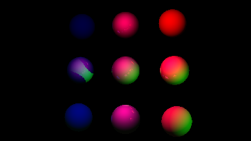 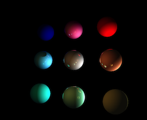 Raytraced spheres with 2 lights (how original, I know :-D). Eventually I dropped out... C4 EngineI used to develop games in cooperation with archanger using Cipher Engine. After that I moved to Linux programming :-) But I still develop games as a hobbyist using C4 Engine.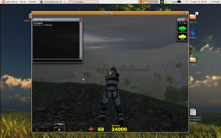 Linux port of C4 Engine (Build 2.0a). For implementation progress see status (Linux, C++). Master DegreeThesis paper - Real-time fluid simulation on GPU (in Slovak, May 2008) - dp3.pdf.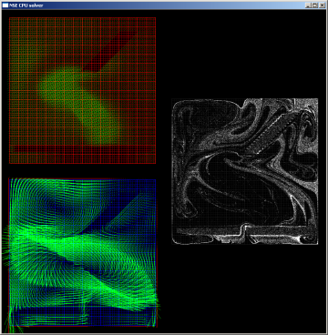- 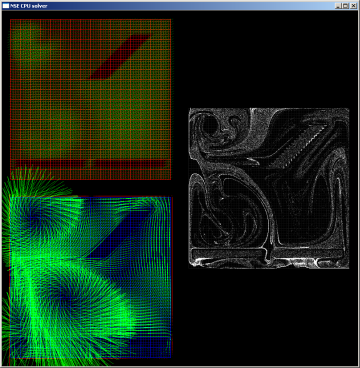 Screenshots of NSE Solver. PhaseONE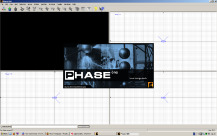- 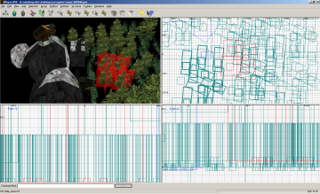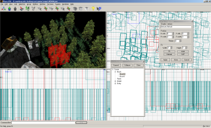- 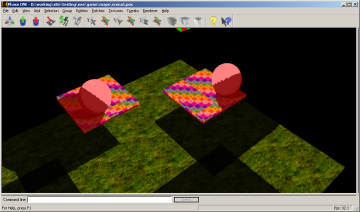 PhaseONE (QRadiant-like) level editor used to build levels for Cipher Engine. Works and level design created in cooperation with archanger (Win32, OpenGL / Cipher Engine, C++). Game Prototype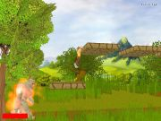- 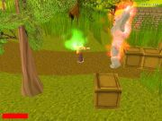- 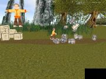- 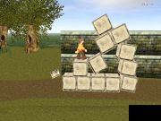1st and 2nd gameplay testing level. 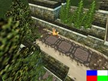- 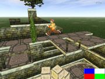- 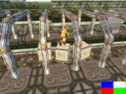- 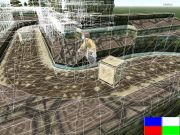 3rd gameplay testing level. Artwork and level design by archanger (Win32, ODE / Cipher Engine, C++). ODE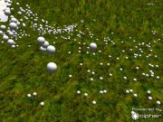- 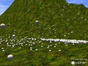Testing app. of ODE (Open Dynamics Engine) integrated into Cipher Engine - collision and physics (Win32, ODE / Cipher Engine, C++). School work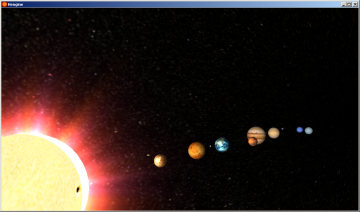- 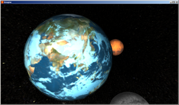School semestral work - Solar System (Win32, OpenGL, C). 3D virtual reality emerging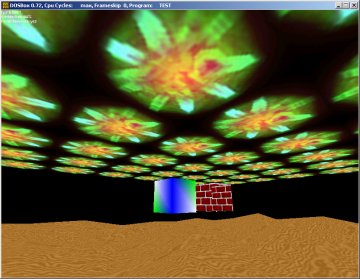Some attempts with hi-res to get that gorram 3D working (DOS, VESA SVGA, protected mode, C). 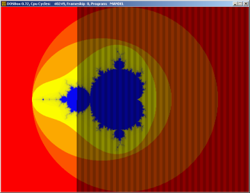 Must have of every programmer (quite slow - interlaced rendering used, DOS, VESA SVGA, real mode, Pascal). 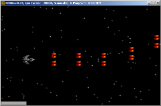- 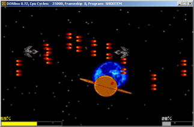 Shoot'em down side-scroller (finally managed to add music to it - not audible ;-), DOS, Pascal). Old school (like 20th century)I've dug out some old trash code from previous century :-) Just to show my beginings (DOS real mode, VGA 0x13 mode of course).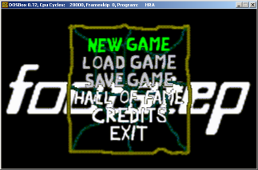- 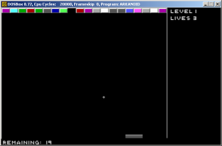 Never ever finished game (not even properly started to be honest) and Arkanoid 2001 clone (DOS, Pascal). 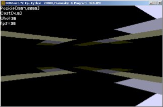- 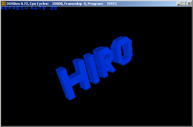 Wannabe game and first "demo" (DOS, Pascal). Top |